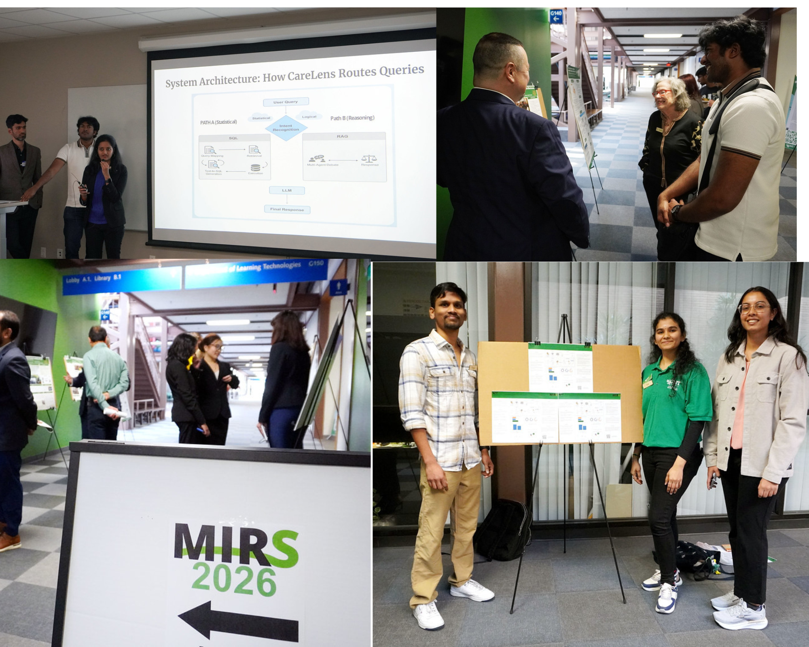
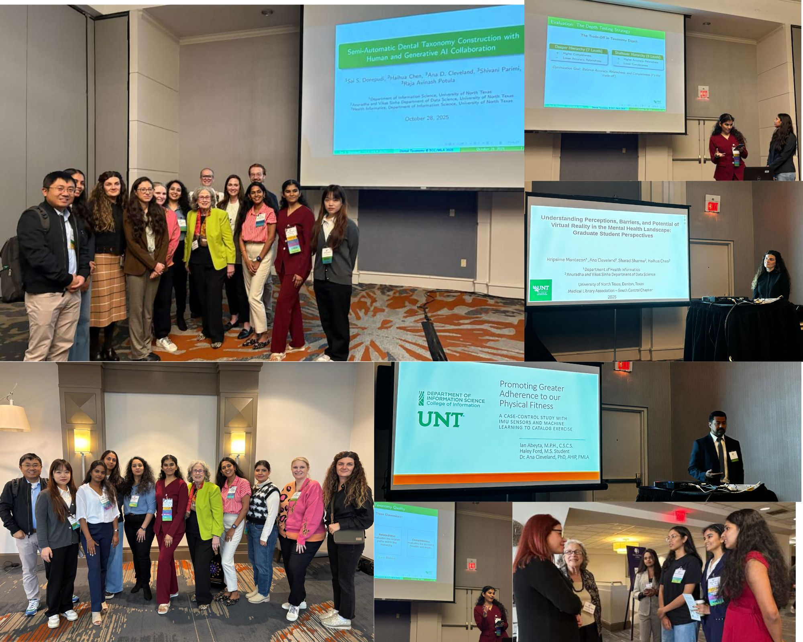
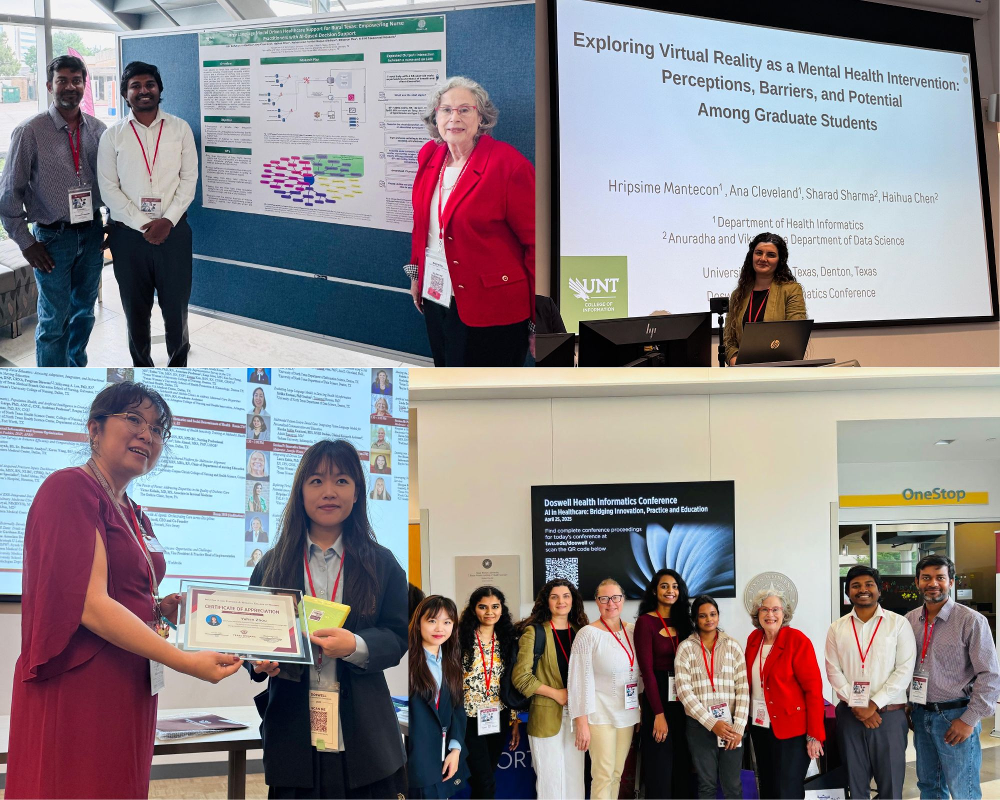
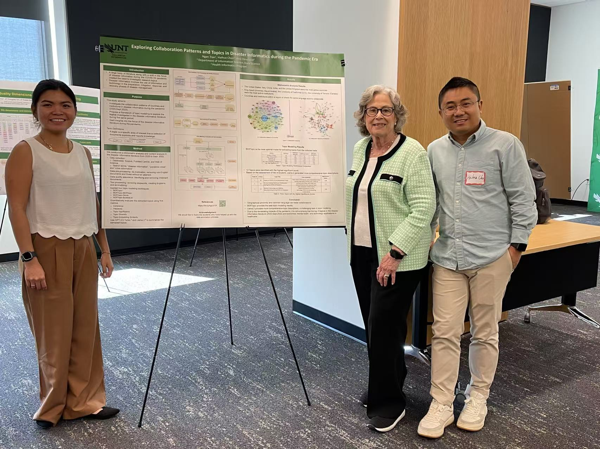

04/10/2026 – HEAL faculty and students attended InfoFORCE: Information and AI 2026
HEAL faculty and students attended InfoFORCE 2026 to explore advancements in artificial intelligence and its applications across disciplines. The event brought together researchers, industry professionals, and students to discuss emerging trends in AI-driven innovation, data science, and interdisciplinary research, while providing opportunities for networking and knowledge exchange.

03/28/2026 – HEAL faculty and students attended MIRS 2026
HEAL faculty and students attended MIRS 2026 to explore interdisciplinary research in information science and its impact on people and healthcare. The symposium showcased student and researcher work across diverse domains and provided an opportunity to engage in scholarly discussions, share ideas, and learn about emerging research in information and health informatics.

20/02/2026 - HEAL faculty and students attended TMC AI Summit 2026
HEAL faculty and students attended the TMC AI Summit 2026 to explore the latest advancements in artificial intelligence in healthcare, digital health innovation, and data-driven clinical solutions. The summit provided valuable opportunities to engage with industry leaders, learn about emerging technologies, and gain insights into real-world applications of AI in healthcare.

10/28/2025 - HEAL faculty and students attended SCC/MLA Conference 2025
HEAL faculty and students attended SCC/MLA 2025 to learn about current trends in health information, data, and evidence-based practice. The conference provided opportunities to connect with peers, explore new ideas, and represent UNT’s work

10/28/2025 - HEAL students who won Mayo Drake Awards at SCC/MLA Conference 2025.
Congratulations to our HEAL students who received the Mayo Drake Award in recognition of their outstanding contributions and engagement at SCC/MLA 2025. This award highlights their dedication to professional development, leadership, and excellence in the health information community.

09/2/2025 - HEAL faculty and students attended Texas Health Informatics Alliance Conference 2025 at UTA
We would like to thank Dr. Ana Cleveland and the conference committee for this precious opportunity!

04/25/2025 - HEAL faculty and students attend Doswell Health Informatics Conference 2025
HEAL faculty and students attended the Texas Health Informatics Alliance Conference at UTA to engage with professionals and explore current trends in health informatics. The event provided valuable opportunities to learn, network, and represent UNT’s work in the field.

10/30/2024 - HEAL faculty and students attend SCC/MLA 2024
Our paper “Evaluating ChatGPT-based Data Augmentation for Medical Concept Normalization” by Dr. Haihua Chen, Ruochi Li, Dr. Ana Celevland, and Dr. Junhua Ding won a third award at the SCC/MLA 2024 Annual Conference. Ph.D. student Yuhan Zhou presented this paper on behalf of our team and connected to excellent researchers and practitioners in the Health Informatics field. We would like to thank Dr. Ana Cleveland and the conference committee for this precious opportunity!
9/21/2024 - HEAL faculties and students attend UNT HIDS Day
Faculties and students in the HEAL Lab attended the Day of Health Informatics and Data Science at UNT Frisco Landing. Several posters were selected as award finalist at the event.
